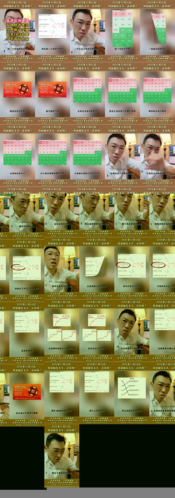
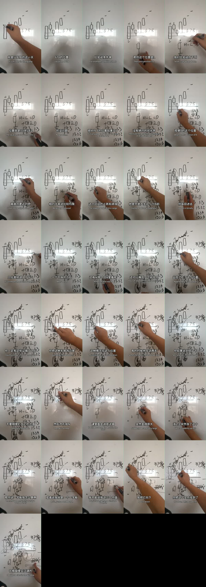

博主战法视频 · 全量抽帧解析
2026-11-16 · 绕开"主页最近 30 条"限制，按视频 ID 从单条详情页取直链下载抽帧 · 覆盖主页范围外 34 条高画面依赖视频
跑量结果：7 位博主主页各只能抓到 16~18 条；全量口播库 382 条里，筛出主页范围外 + 有战法画面依赖的 34 条（花博 6 / 凯心 10 / 邢不行 18），全部下载成功、抽帧完成（34/34，约 1.8GB 视频，mp4 下完即删只留抽帧图）。
关键发现：凯心的 N 字战法白板图解（H−L=D、六七八买点、承接位博弈）与此前回测定义一致；邢不行的量化打假视频里是真实的回测图表/胜率数据，方向与其口播结论互证。画面均已看到，未产生新的可量化信号，原回测结论不变。
关键发现：凯心的 N 字战法白板图解（H−L=D、六七八买点、承接位博弈）与此前回测定义一致；邢不行的量化打假视频里是真实的回测图表/胜率数据，方向与其口播结论互证。画面均已看到，未产生新的可量化信号，原回测结论不变。
说明：每格图为视频按时间抽帧的网格；带图的条目是本地已拉回的高价值画面。点视频 ID 跳抖音原视频可看完整画面。
底部区域，结构和节奏 #散户必看 #A股
画面：讲义·图形一~五列表（已精抽）
- 今日市场暴跌，国家队进场，政策底已现。
- 防守板块如银行、消费、红利表现较好。
- 科技板块表现不佳，需谨慎操作。

底部区域，结构和节奏 #散户必看 #A股
画面：讲义·图形形态图
- 市场资金普遍抛售，市场情绪波动大。
- 看懂市场阶段和资金流向是关键。
- 尊重市场阻力位置，不必深究原因。

政策底转向市场底！ #A股 #散户
画面：人脸讲解/盘面观点
- 市场进入政策底，预示市场底到来。
- 政策底先于市场底出现，市场情绪逐渐转向。
- 核心权重股开始反弹，机构建仓信号明显。
三个锦囊！情绪还需要求证！ #A股 #散户
画面：人脸讲解/盘面观点
- 近期楼市房地产可能回暖，金九银十或出现销售增长。
- 市场成交额接近1.8万亿，表明国家队操作带动市场情绪。
- 小盘股活跃，游资和中型资金在各自赛道上表现活跃。
最后有避雷！底部区域轮动！ #散户必看 #A股
画面：人脸讲解/盘面观点
- 髋基指数处于底部区间，无明确上涨预期。
- 双创板块存在大平台套牢，需注意解套压力。
- 双创龙头底部筹码交换活跃，市场共识不足。
白马蓝筹布局，小微酝酿跨年 #散户必看 #A股
画面：人脸讲解/盘面观点
- 中超夺冠，大连球迷兴奋，感谢四川、山东、天津及辽宁球迷。
- 直播福利仅限四川、山东、天津、辽宁四省市球迷。
- 个人目标：中国股市上一万点，中国足球进入世界杯。
N字系统第九集 #凯心#N字战法#妖N战法#股票#金融知识
画面：白板手绘·N字三笔图解（已精抽高清）
- 六七八位置为长阳强住日的买点区间
- 计算买点需考虑最高成交价H和最低成交价L
- 六七八位置无绝对优劣，取决于机会和安全边际取舍

N字系统第八集 #凯心#N字战法#妖N战法#金融知识#股票
画面：白板手绘·股票代码+涨停形态
- 排除委盘拖袭、尾盘偷袭、烂板、减持、业绩作假等负面因素。
- 成交量递减，抛压减弱，分时低点不破为良性回踩信号。
- 下眼线逐步收敛，恐慌抛售未扩大，避免连续光脚阴线。

N字系统第五集 #凯心#N字战法#妖N战法#金融知识#股票
画面：白板手绘·公式图解（N字第五集）
- 水下长阳，资金进攻力度大，成本分散。
- 短阳需注意不破零轴，波动窄，强度靠高位持续。
- 一字板筹码集中度高，分歧后抛压需小。
病态亏损 #凯心#N字战法#妖N战法#股票#金融知识
画面：人脸讲解/盘面观点
- 亏损是常态，不应视为圣经。
- 亏损是病态，应寻求治疗。
- 平仓概率大于50%的模式是优秀的。
非常符合现在 #凯心#N字战法#妖N战法#金融知识#股票
画面：白板手绘·H/D刻度+承接位博弈
- 短阳买点计算方法：从最高点H减去最低点L，均分得到D点。
- 一字涨停计算买点：合并前一天K线，找到顶边和底边。
- 跳空高开处理：合并前一天K线，考虑真实成交。

N字系统第十集 #凯心#N字战法#妖N战法#股票#金融知识
画面：白板手绘·多组N字形态（第十集）
- 资金来源分析，关注成本和心态差异
- 低位资金自救行为为市场提供动力
- 低成本资金在市场压力释放时更具优势
对不起，打脸了 #凯心 #N字战法 #妖N战法 #股票 #金融知识
画面：人脸讲解/盘面观点
- 技术不是交易成功的关键，思维和欲望更为重要。
- 明确的目标和欲望比技术更重要。
- 自我暗示和潜意识对交易成功至关重要。
N字系统第四集 #凯心#N字战法#妖N战法#股票#金融知识
画面：人脸讲解/盘面观点
- N形态需拆解为可验证的条目
- 核心在于理解资金动向
- 图形需证明真实强度
找机会！ #凯心 #金融知识 #N字战法 #妖N战法 #股票
画面：人脸讲解/盘面观点
- 跟随资金布局而非拉升末端
- 关注板块整体量能变化而非单一股票
- 下跌时观察量能变化，判断资金介入
优中选优 #N字战法#凯心
画面：人脸讲解/盘面观点
- 周期性题材多，选择困难。
- 避免无归因涨停股，寻找放量止跌题材。
- 关注缩量直跌，但放量止跌的题材。
技术指标消亡史：从独领风骚到泯然众人 #量化投资 #金融 #财经 #指标 #掘金
画面：人脸讲解/盘面观点
- A股早期以技术指标分析为主，价值投资后逐渐被认可。
- 量化投资近年因收益率和新闻被大众熟知。
- 技术指标在A股多年，股民对其有效性有争议。
5分钟学会,5个赚钱指标?小白也能看懂的量化财务指标 #金融 #财经 #股票 #
画面：财务指标柱状图+PR公式
- 分享五个历史表现好的财务指标
- 现金支出利润差策略年化收益15.63%
- 利润收入增速差策略翻七倍

大A专治股神,巴菲特来了也亏钱?挑战用一个指标模仿巴菲特炒股 #掘金计划2026
画面：人脸讲解/盘面观点
- 巴菲特投资方法在A股适用，需长期持有
- 选股难度大，易被套
- 量化选股结合PB和ROE指标
7分钟学会AI量化,网上大师策略,一测就现行? #AI #量化 #掘金计划202
画面：人脸讲解/盘面观点
- 普通人用AI做量化，无需代码，5分钟测试交易策略。
- 通过数据和代码模拟历史表现，判断策略好坏。
- AI工具可完成代码修改、调用文件、运行程序。
3个数字,帮你半年抓48个涨停板,10万轻松做到100万? #掘金计划2026
画面：五一三战法·涨停K线示意
- 五一十三战法需连续五根阳线，特殊异动，量大影长。
- 异动线后三天，振幅不超过5%，收盘价不低于异动开盘价。
- 模拟测试显示，战法胜率低，收益率有限。

用一根K线,看清一家公司?股性越好的公司,越不赚钱? #量化投资 #金融 #股票
画面：人脸讲解/盘面观点
- K线由开盘价、最高价、最低价、收盘价组成
- 阳线收盘价高于开盘价，阴线反之
- K线形态在技术分析中广泛应用
公司现金越多越好？买现金多的公司未来会涨的更多吗？ #量化投资 #金融 #股票
画面：人脸讲解/盘面观点
- 验证选股指标有效性，用历史数据说话。
- 研究现金占总资产比例指标，分析其有效性。
- 量化策略验证，结合行业特性。
A股唯一不骗人的技术指标?收割量化资金的终极战法? #量化投资 #金融 #股票
画面：人脸讲解/盘面观点
- 量比是衡量股票即时成交量相对活跃度的指标
- 量比小于0.5时明显缩量，0.8-1.2继续观察，1.2-2.5温和放量，2.5-5明显放量，大于5情绪异常离场
- 量比与换手率结合使用，换手率大于5且量比在2-3之间为买入信号
邢不行市场择时指标01：创60日新高/新低个股占比 #量化投资 #python
画面：白板+成交量柱状图
- 指标监测创最近六十天新高的个股占比
- 指标计算方式：创六十新高的股票数量/当天所有股票数量
- 指标用于量化策略，结合其他指标分析大盘走势

跌停买入，稳赚不赔？全网爆火的跌停板战法靠谱吗？ #跌停板 #投资 #炒股 #量
画面：人脸讲解/盘面观点
- 跌停版战法流行，核心是跌停后买入
- 当天买入无亏损，但第二天开盘后亏率较高
- 长期持有亏钱几率大，平均收益率负
4个月翻了40倍?实战可查?不输大师的2560战法,在A股还能大杀四方吗?#量化
画面：人脸讲解/盘面观点
- 二五六零战法基于25日均线和60均量线判断买点
- 该战法源于1987年交易比赛，安德烈波苏四个月收益超4500%
- 策略信号出现后股价上涨概率小于50%，平均收益为正
注意，注意，检测到抱团信号！神秘信号一出现，市场就要大变天? #掘金计划2026
画面：人脸讲解/盘面观点
- 指标判断出三次牛熊转换和市场风格切换
- 指标在45%处有六个时间点大于45%
- 点一对应2007年10月，点二对应2008年9月，点三对应2014年12月，点四对应2008年9月，点五对应2018年1月，点六对应2026年6月
这个神秘指标，怎么每次都能精准发现抱团行情啊？ #掘金计划2026 #股票 #
画面：抱团指标·走强/分歧定价曲线
- 指标捕捉历史机构爆团行情，包括科技股爆团。
- 指标由红色区间组成，与历史抱团行情对照。
- 历史上最长抱团行情持续469个交易日。
2天稳赚1.4%,10年超越马斯克?稳赚不赔的跌停板战法? #掘金计划2026
画面：跌停板战法·胜率柱状图
- 跌停版战法二点零，尝试稳定套利。
- 测试结果显示，买入后收益大于零的概率为52.67%。
- 策略平均收益率1.25%，但模拟示范表现差。
投资不识筹码峰，炒遍A股也枉然？ #量化投资 #金融 #理财 #财经 #股票
画面：人脸讲解/盘面观点
- 筹码分布指标是标配，显示不同价位持股人数和数量
- 筹码分布图反映动态变化，不同日期显示不同分布
- 指标简单，股价对应筹码数量，长条表示持股人数多
史上最燃K线争霸赛,启明星/黄昏星/流星形态/倒锤子,谁才是A股最赚钱星线类形态
画面：人脸讲解/盘面观点
- 启明星三叉戟预示上涨，平均收益率2.49%。
- 黄昏星四天王预示下跌，平均收益率2.92%。
- 流星形态母女预示下跌，平均收益率正。
AI自动炒股，秒杀巴菲特？GPT写的量化程序靠谱吗？ #量化 #量化投资 #炒股
画面：人脸讲解/盘面观点
- AI 工具可自动测试 MACD 指标效果并生成可视化图表
- AI 可辅助量化交易，降低编程门槛
- AI 可自动生成代码，实现量化回测
挑战每天买烂板股票，不仅没亏光还赚了 100 倍？ #量化 #炒股 #投资 #金
画面：人脸讲解/盘面观点
- 杰西·利弗摩尔是百年美股第一人，经历多次破产与东山再起。
- 烂板股票（盘中涨停但收盘未涨停）存在交易价值。
- 烂板股票次日开盘买入，持有一天收益率高。